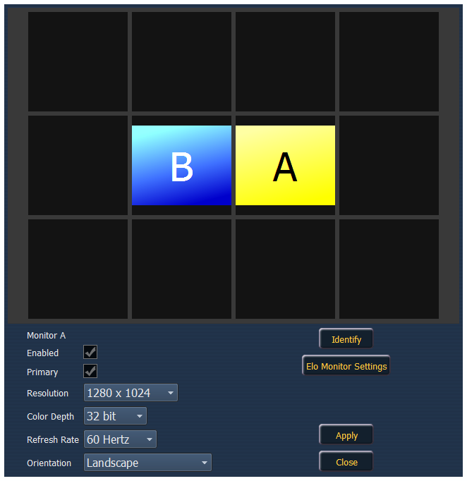

Monitor Arrangement

Note: The selected monitor will display in yellow. External monitors can be dragged to any of the surrounding black boxes to mimic actual monitor layout. Internal monitors are locked in relationship to each other and cannot be changed.
The Monitor Arrangement Tool will dictate how and where the pointer moves from one screen/monitor to another. Generally speaking, you will want the logical placement on this screen to match your physical placement.
Buttons available in the External Monitor Arrangement display are:
- {Calibrate} - see Calibrate Touchscreens (on page 1).
- {Reset Calibration} - restores default calibration data for selected display.
- {Identify} - displays the video port numbers that your monitors are connected to on the physical monitors to confirm where you have placed them.
- {Enabled} - When checked, the monitor is available for use. The desk will display the {Enabled} box checked for any monitors it recognizes.
- {Primary} - selects which monitor will display the Eos Configuration Utility and Central Information Area (CIA).
- {Resolution} - sets how many pixels the monitor will display.
- {Color Depth} - sets how many colors will be displayed.
- {Refresh Rate} - sets the number of times in a second the monitor refreshes.
- {Orientation} - sets the monitor layout.
- {Apply} - will save and use your settings. A window will open asking if you want to {Keep Changes} or {Revert} back to the defaults. {Revert} will be selected within 15 seconds if nothing else has been selected first.
- {Close} - will close the display. {Close} will not save any settings if {Apply} has not been used.
- {Configure Touchscreens} - is used to map the touch screens to the displays.
- {Elo Monitor Settings} - opens the properties window for the monitor. See Calibrate Elo Touchscreens .
- {ETC Monitor Settings} - opens the properties window for the monitor. See Calibrate ETC Touchscreens
Note: Only supported options will display. Monitor options may vary. While it is possible to assign a resolution lower than the minimum (1280x1024), it is recommended to be at 1280x1024 or higher.